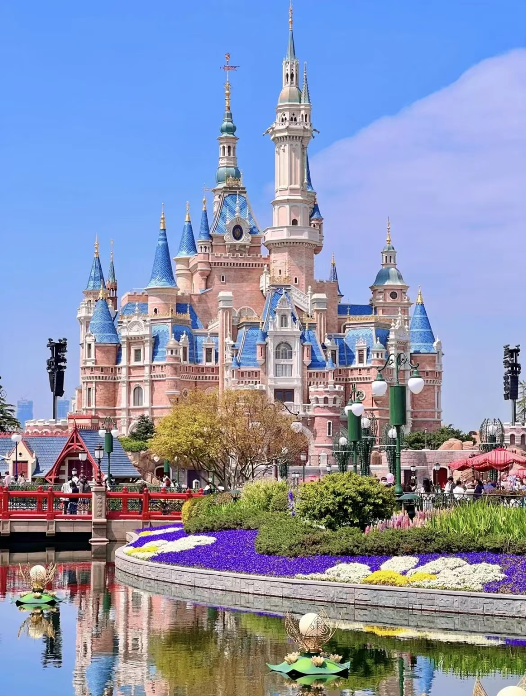
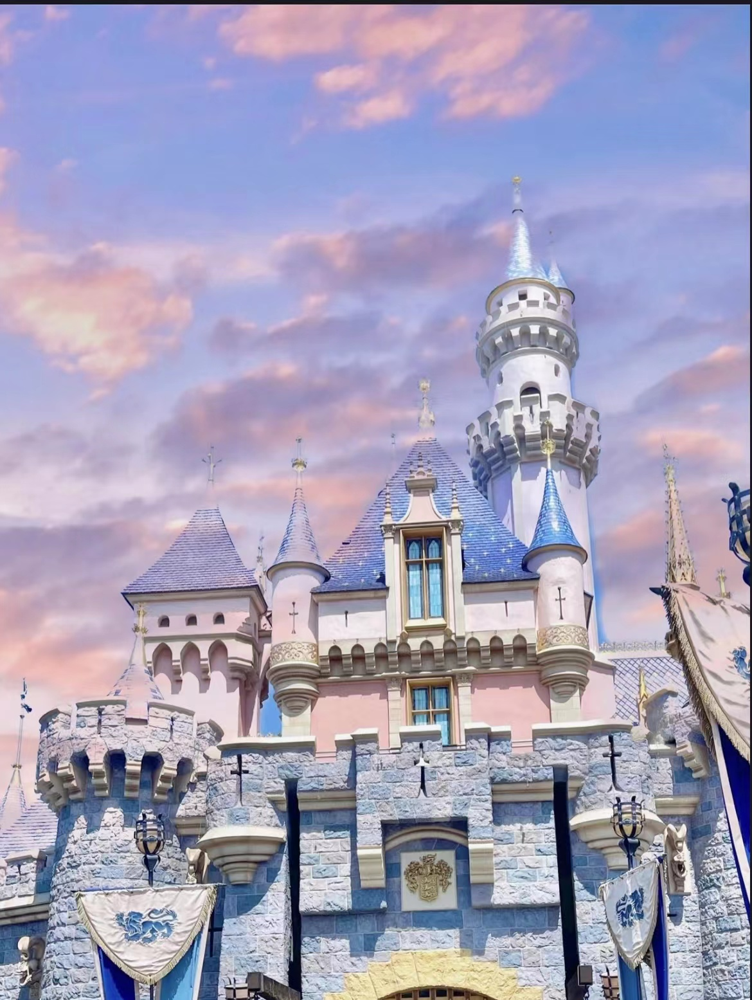
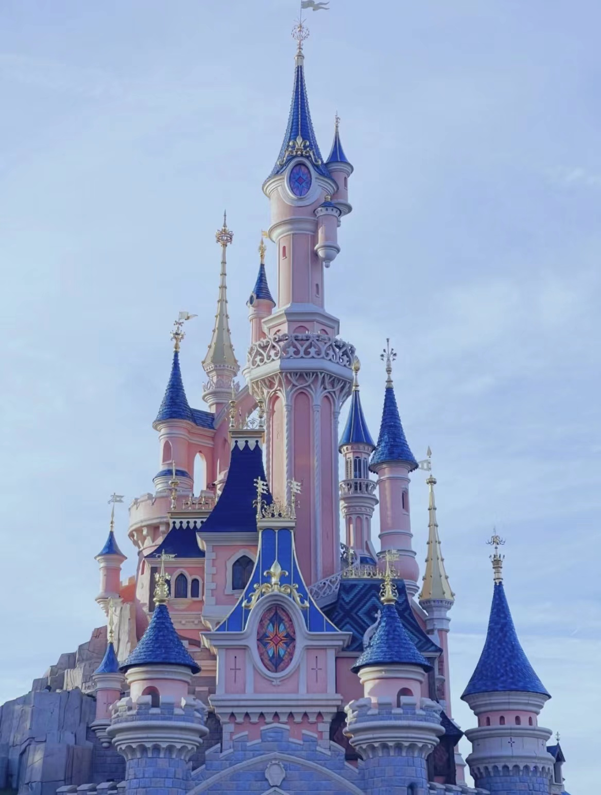
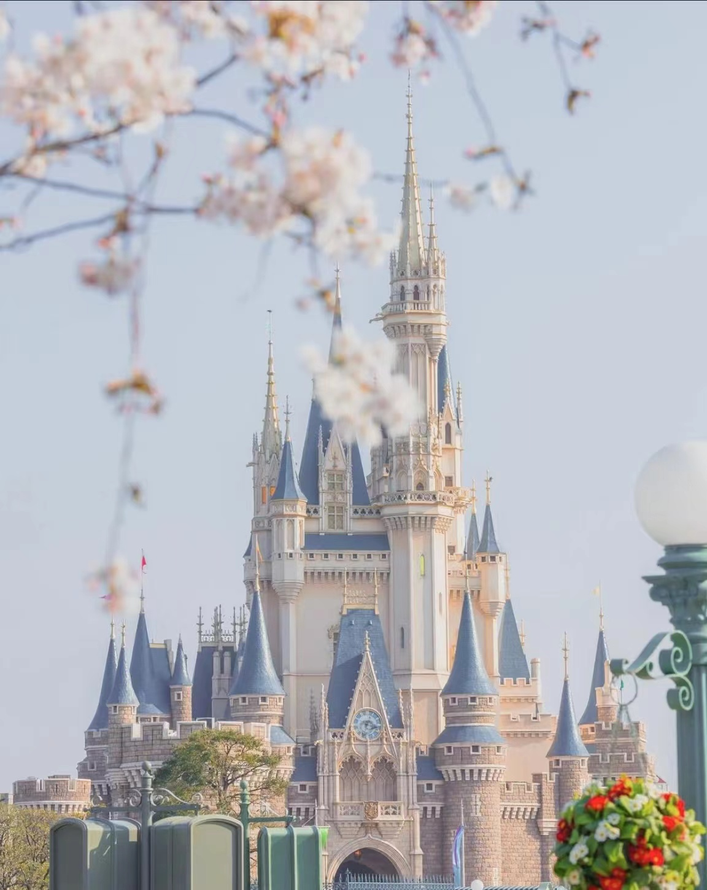

上海迪士尼乐园，位于上海市浦东新区川沙镇黄赵路310号，
于2016年6月16日正式开园，是中国内地首座迪士尼主题乐园，
也是中国规模最大的现代服务业中外合作项目之一，
是一座具有纯正迪士尼风格并融汇了中国风的主题乐园。

加州迪士尼乐园度假区于1955年开业，是世界第一座、美国第一座迪士尼乐园，
它的名字就叫“迪士尼乐园”，无任何前缀後缀，但是为了方便区分，
人们习惯叫它加州迪士尼、元祖迪士尼。
拥有两座主题乐园（加州迪士尼乐园、和迪士尼加州冒险乐园）、三家主题酒店和一个迪士尼小镇。

巴黎迪士尼乐园度假区于1992年开业，
是目前欧洲唯一的迪士尼度假区、世界第四家、海外第二座迪士尼，
包括两座迪士尼主题乐园——巴黎迪士尼乐园、华特迪士尼影城乐园和七家主题酒店。

东京迪士尼乐园度假区于1983年开业，
是在美国本土以外的第一座迪士尼度假区、亚洲第一座、世界第三座建成的迪士尼乐园。
东京迪士尼度假区有两座主题乐园——东京迪士尼乐园、和东京迪士尼海洋，
游客们可以在此享受独特的餐饮体验和丰富的购物住宿体验。
同时，东京迪斯尼海洋世界也是迪士尼伙伴——达菲的出生地。